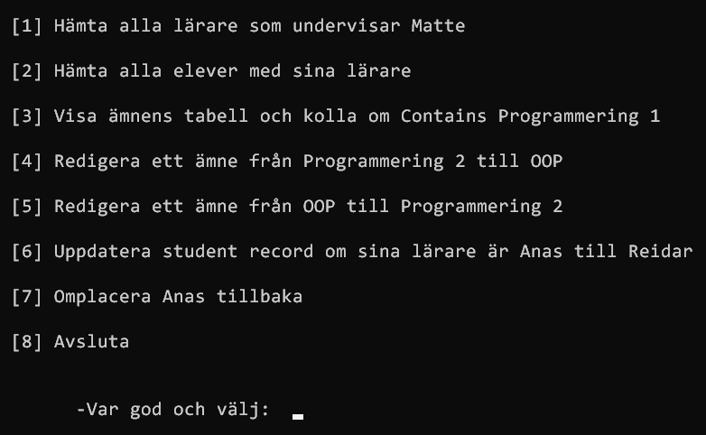
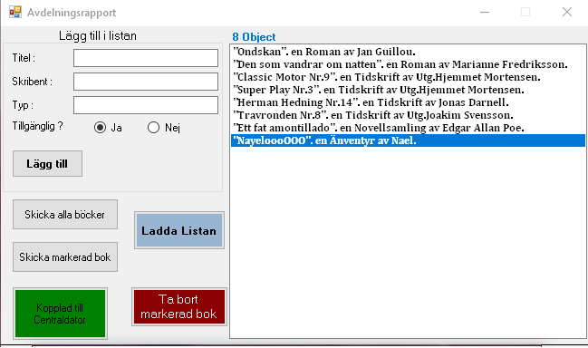

Curriculum vitae

Kort Om Mig
En riktig IT-kille som läste datorvätverk i gymnasiet och i ett
institut för två år.
Har jobbat i mer än fem år i industribranschen som maskinoperatör, och
nu pluggar jag till systemutvecklare i yrkeshögskolan i Varberg.
Av tidigare arbetskamrater har jag fått höra att jag motiverar och
entusiasmerar mina kollegor, är också trevlig och ställer upp för dem
när de behöver hjälp.
Jag gillar utveckling och att lära nytt. Jag arbetar jättebra i ett
team och även i stressiga situationer.
PROJEKT PORTFÖLJEN
| ● Minimal-API - ASP.NET med Dapper ● |
Projektet består av en SQL-databas med konfigurerad Dapper för en
enkel dataåtkomst. Projektet innehåller en enda klass för en helt fungerande API 
|
|---|---|
| ● Restful-API för ett företag - ASP.NET Web-API med Class Library ● |
Ett tids rapporteringssystem som samlar data om anställda och
deras tider som dem jobbat. Projektet resulterar i ett REST-API. 
|
| ● Car Racing Simulator - Console Application ● |
Ett program som simulerar en biltävling där två (eller fler) bilar
kör ett lopp mot varandra. Det är ingen grafik utan enbart i konsolen men bilarna kommer köra i olika trådar och verkligen på riktigt tävla mot varandra. 
|
| ● Databas för en skola - Console Application med Entity Framework ● | En Console-applikation som en skola kan använda och som har många olika funktionalitet.  |
| ● Number Guessing Game - Console Application ● |
Ett rätt enkelt spel där användaren får gissa ett nummer. Användaren kommer få lite ledtrådar och har ett begränsat antal försök på sig att gissa. 
|
| ● Avdelningsrapport för ett bibliotek - Windows Forms ● |
En windows-forms-app som skickar in listor med böcker till en
central dator som kör annan desktop-app Den desktop-appen tar emot data, lägger text i en lista och kan exportera listan som en textfil. Både Programm kan exportera och importera text från en fil och konvertera det till ett bokobjekt, och använder lokala IP-adress (127.0.0.1) och porten 12345.  |
| ● Lagerdatabas - Windows Forms ● |
Det här programmet läser in en databas med en tabell kallad
"Vitvaror". Bland vitvarorna finns det olika inlägg med ett Id, Namn, Lagerstatus och Pris. I grundversionen av programmet finns det olika metoder och funktioner. 
|
ARBETSLIVSERFARENHET
| 2016-2021 | Maskinoperatör på Swt Paper AB |
|---|---|
| 2013-2014 | Säljare i butik för turister i Istanbul – Turkiet |
UTBILDNING
| 2021-2023 | Systemutvecklare .NET |
|---|---|
| 2020-2021 | Utveckling med C# |
| 2014–2016 | Vuxenutbildning |
| 2010–2013 | Teknisk högskola – Dator och nätverkstekniker |
| 2008–2010 | Gymnasieutbildning – Naturvetenskap |
FEM ORD SOM BESKRIVER NAEL
- Uppriktig
- Utåtriktad
- Innovative
- Självgående
- Kvalitetsmedveten